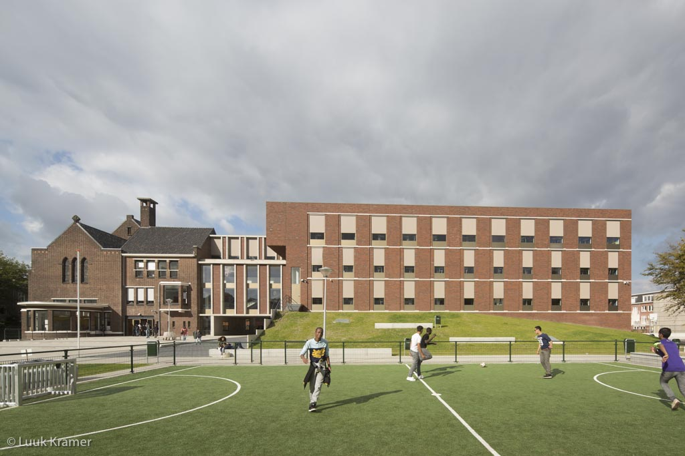

Welkom
Mijn naam is Kaan. Ik ben 16 jaar oud. Ik zit op het Mondriaan in Tinwerf.
Daarvoor zat ik in op het middelbare school: Edith Stein College.

Nu ben ik de opleiding Software Developer Niveau 4.
Mijn hobbies zijn Voetballen als het warm is en thuis Playstationen bij me vrije tijd.
Ik werk vaak vrijwillig bij mijn vaders garage